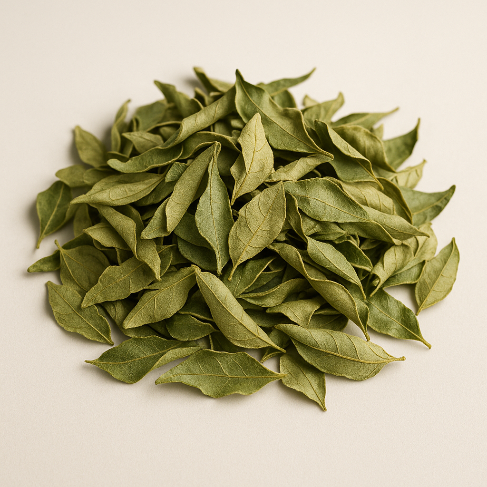

Best Dried Curry Leaves Australia: Online Ordering & Delivery Guide
🌿 Don't just read about it—feel the difference.
Pantry staples minus the junk — moringa leaf powder plus dried curry leaf, delivered with tracking you can stalk. Browse NutriThrive.
Shop Best Sellers →Buying dried curry leaves online in Australia? This guide compares shipping speeds, packaging quality, and delivery options across Sydney, Perth, Melbourne, and nationwide. We've tested multiple online retailers to help you find the best dried curry leaves with fast, reliable delivery.

Key factors when buying online: Packaging quality (resealable bags vs. loose), shipping speed (1-3 business days vs. 5-7 days), and delivery costs. This guide focuses purely on online ordering, shipping logistics, and ensuring your curry leaves arrive fresh and intact.
👉 Shop now: NutriThrive Dried Curry Leaves – 30 g $6
🌿 Try Premium Moringa Powder Today
Experience the benefits of 100% organic, lab-tested moringa powder from NutriThrive. Free delivery across Victoria!
🌱 What Exactly Are Dried Curry Leaves?
Fresh leaves are wonderful but short-lived — they wilt within days. Dried curry leaves are their smarter, Melbourne-friendly cousin: air- or oven-dried to lock in essential oils, offering 6–12 months of shelf life without preservatives.
🔗 Explore More from Our Curry Leaves Hub
Discover related articles and guides:
They retain most of the flavour, nutrients, and antioxidants of fresh leaves while fitting perfectly into modern, busy lifestyles.
💡 Quick tip: For recipes calling for fresh leaves, use 2–3 × more dried leaves. If a recipe needs 5 fresh leaves, use about 10–12 dried ones.
🥘 Fresh vs Dried Curry Leaves – Which Works Best in Melbourne?
| Feature | Fresh Curry Leaves | Dried Curry Leaves |
|---|---|---|
| Aroma | Sharp, citrusy – best when freshly fried | Warm, roasted, deeply nutty |
| Shelf Life | 3–5 days refrigerated | 6–12 months sealed |
| Availability | Limited – harder in winter | Year-round, easy to store |
| Usage | Garnishes, light curries | Curries, powders, teas, marinades |
| Sustainability | High waste if not used fast | Zero waste, longer use |
For Melbourne home cooks, dried leaves simply make sense. Local humidity can ruin fresh leaves fast, and stores often run out. With dried ones, you always have that authentic flavour ready.
🌿 Health Benefits of Dried Curry Leaves
Curry leaves aren't just tasty — they're a wellness powerhouse. Both Ayurveda and modern science celebrate them for multiple health benefits:
🧬 1. Antioxidant Powerhouse
Packed with vitamins A, B, C & E plus plant compounds like linalool and carbazole alkaloids, dried curry leaves neutralise oxidative stress and protect your body from cellular damage.
💪 2. Supports Digestion & Gut Health
Ayurvedic texts note curry leaves as a "deepana pachana" herb — one that kindles digestion and balances stomach acids. Drinking curry-leaf tea after meals helps reduce bloating and indigestion.
💚 3. May Help Regulate Blood Sugar
Studies (Journal of Ethnopharmacology, 2016) show that curry-leaf extracts can help moderate post-meal glucose spikes — a gentle support for people mindful of blood-sugar levels.
🧖♀️ 4. Hair & Skin Nourishment
Rich in iron, beta-carotene and amino acids, curry leaves are used in Ayurvedic hair oils to combat greying and dryness. Crush a few dried leaves into coconut oil and warm slightly — an easy DIY tonic. learn more about moringa superfood
🌸 5. Immunity & Detox Support
Their antimicrobial and anti-inflammatory properties help the body's natural cleansing process. Pairing them with other superfoods like NutriThrive Moringa Powder can amplify detox benefits.
🍛 How to Use Dried Curry Leaves in Your Daily Cooking
Here are ten easy, flavour-packed ways to use them in your Melbourne kitchen:
1. Classic South Indian Tadka
Heat ghee, add mustard seeds, cumin seeds, and dried curry leaves – pour over dal.
2. Lemon Rice
Add dried leaves with peanuts, turmeric, and rice for a zesty lunchbox.
3. Coconut Chutney Tadka
Fry dried leaves and pour over chutney – instant aroma.
4. Rasam (Tamarind Soup)
Simmer tamarind, tomato & spices, then add dried curry leaves at the end.
5. Upma or Poha
Fry a handful with onions and mustard seeds.
6. Curry Leaf Powder (Podi)
Dry-roast curry leaves, chana dal, urad dal, and chilli; grind coarse – mix with rice.
7. Snack Seasoning
Crush and sprinkle on popcorn or roasted nuts.
8. Tea Infusion
Steep 10–12 leaves in boiling water – soothing after meals.
9. Marinades
Add crushed leaves to yogurt-spice mix for chicken or paneer.
10. Infused Oil
Warm coconut oil with a few leaves; use for salads or stir-fries.
👉 All these dishes pair beautifully with a warm cup of Darjeeling Black Tea or a post-meal teaspoon of Moringa Powder for a complete NutriThrive wellness combo.
🍵 Recipe: How to Make Curry Leaf Tea (Detox & Digestive Tonic)
Ingredients:
- 10 – 12 dried curry leaves
- 1 cup water
- ½ tsp lemon juice (optional)
- ½ tsp honey (optional)
Instructions:
- Boil water in a small saucepan.
- Add dried curry leaves and simmer for 5 minutes.
- Strain into a cup. Add lemon juice or honey if desired.
- Enjoy warm after meals to aid digestion and detox.
💡 Tip: Pair your morning curry-leaf tea with a spoon of NutriThrive Moringa Powder in a smoothie for an energising start.
🥗 Extra Everyday Ways to Use Dried Curry Leaves in Melbourne Kitchens
If you live in Melbourne, you are surrounded by incredible food — from Sri Lankan grocers in Dandenong to café breakfasts in Fitzroy. Dried curry leaves help you bring some of that flavour home, even when you are cooking with simple Woolworths or Coles ingredients. Once you understand how to open up their aroma with heat and fat, they slot easily into your weekly recipes without any extra complexity.
One of the fastest upgrades is to pair dried curry leaves with roasted vegetables. When your tray of pumpkin, sweet potato or cauliflower is almost done, heat a tablespoon of olive oil or ghee in a small pan, add 6–8 dried curry leaves and let them sizzle for 10–15 seconds. Pour this fragrant oil over the veggies, toss with sea salt and cracked black pepper, and you suddenly have a side dish that tastes like it came from a modern Indian restaurant — perfect with grilled fish, tofu or Sunday roast chicken.
Dried curry leaves also belong in Melbourne’s favourite meal of the day: brunch. Before you add eggs or tofu to the pan, briefly temper a few leaves in butter, ghee or olive oil. Then pour in your scrambled eggs, shakshuka base or tofu scramble. The flavour is subtle but distinctive, and it works beautifully with sourdough, avocado, fetta and roasted tomatoes. You can even add a pinch of crushed dried leaves to your smashed avo for an easy antioxidant boost.
If you like to meal prep, curry-leaf–infused oil is a clever make-once-use-all-week strategy. Gently warm extra virgin olive oil with a handful of dried curry leaves, a garlic clove and a pinch of dried chilli, then cool and store in a glass bottle. This becomes your “instant flavour oil” — drizzle over cooked rice, lentil soups, roast vegetables or even simple grilled chicken. Because the leaves are dried, they keep their flavour in the oil without spoiling quickly.
For families trying to reduce takeaway, dried curry leaves make “fakeaway Friday” more exciting. Add them to quick lentil dahls, chickpea curries or even a tin of tomato soup to give it a South Indian twist. The warm, savoury aroma feels special, but you are still cooking at home, controlling salt, oil and portion sizes. It is a practical way to stretch the budget while enjoying food that feels indulgent and comforting on a cold Melbourne night.
💇♀️ Dried Curry Leaves for Hair & Scalp Health
Beyond the kitchen, dried curry leaves are a traditional favourite for supporting healthy hair and scalp. They are rich in beta-carotene (a precursor to Vitamin A), iron, amino acids and antioxidants — all nutrients that help protect hair follicles from everyday stress. Instead of thinking of them only as a garnish, you can treat them as a quiet, food-based ally for long-term hair health.
The simplest strategy is to eat a small amount regularly. When you use curry-leaf powder in soups, stews, rice dishes or smoothies, you are delivering those nutrients from the inside out. This is especially useful if you are prone to low iron, which is a common cause of hair thinning in women. A daily sprinkle of curry-leaf powder alongside a generally balanced diet is easier on the body than aggressive, high-dose supplements.
You can also create a very gentle DIY hair and scalp oil using dried curry leaves you already have in the pantry. Lightly warm coconut oil or almond oil with a small handful of dried leaves until they darken and release their fragrance, then let it cool, strain and store in a clean bottle. Massaging this oil into your scalp 1–2 times per week before shampooing can help moisturise the scalp, support blood flow and reduce the feeling of dryness or tightness, especially in heated or air-conditioned homes.
Because this is a natural, food-based approach, results are gradual. Most people notice softer, more manageable hair and a calmer scalp over a period of weeks to months, not days. For best effect, combine curry-leaf routines with enough protein, good sleep and gentle handling of your hair (less heat, fewer tight ponytails). Think of dried curry leaves as one part of a broader wellness plan: they add depth to your cooking, support digestion, and quietly nourish your hair and skin at the same time.
🍂 Where to Buy Dried Curry Leaves in Melbourne
Why Melbourne Shoppers Love It:
💚 100% Natural
No preservatives or fillers
🌿 Convenient Pack
30 g resealable pack for everyday use
🚚 Free Delivery
Free Melbourne delivery (this week only)
🇦🇺 Australian Quality
Trusted brand and quality
✨ Order yours now: Shop NutriThrive Dried Curry Leaves – $6
🏡 Storage Tips for Long-Lasting Freshness
Melbourne's changing climate can make herbs lose potency fast. To keep your curry leaves fragrant: read our about guide
✅ DO:
- Store in a cool, dry cupboard away from light and moisture
- Use the resealable pouch or transfer to an airtight jar
- Replace every 8–12 months for maximum flavour
❌ DON'T:
- Avoid the fridge unless humidity is very high
- Don't expose to direct sunlight
- Don't store near heat sources
These small steps preserve aroma and make each handful sizzle just like fresh leaves.
💬 Frequently Asked Questions
Q: Can I use dried instead of fresh curry leaves?
A: Absolutely – just increase the quantity slightly and temper them in oil to release flavour.
Q: Are dried curry leaves healthy?
A: Yes – they retain most nutrients from fresh leaves and contain antioxidants, vitamins and iron.
Q: Can I make tea from them?
A: Yes – boil a few leaves in water for 5 minutes and sip warm after meals.
Q: Where can I buy them in Australia?
A: Right here 👇
👉 NutriThrive Dried Curry Leaves – 30 g for $6 with Free Melbourne Delivery
🌾 Bonus: The NutriThrive Superfood Trio – Build Your Healthy Pantry
Melbourne's modern food lovers are rediscovering ancient superfoods for flavour and function. Together, these three make your pantry powerful and balanced:
| Product | Key Benefit | Perfect Pairing |
|---|---|---|
| 🌿 Dried Curry Leaves | Antioxidant & digestive booster | Daily Indian meals, snacks, teas |
| 💚 Moringa Powder | Rich in plant protein & iron | Smoothies, soups, energy bowls |
| 🫖 Darjeeling Black Tea | Focus & immunity support | Afternoon tea rituals |
By linking these internally, Google recognises NutriThrive as a trusted Australian superfood brand, boosting 100% natural authority across categories.
🫖 Why Premium Black Tea Belongs in Your Curry-Leaf Routine
If dried curry leaves are the hero of your savoury cooking, black tea is the quiet achiever in your daily cup. NutriThrive’s Premium Black Tea blends high-quality Darjeeling and Assam leaves, giving you a smooth, aromatic brew with enough body to stand up to rich, spice-forward meals. Many Australians find that swapping just one of their daily coffees for a pot of quality black tea brings a calmer, more focused kind of energy — without the jittery crash later in the day.
Black tea is naturally rich in polyphenols, a family of antioxidants that help the body cope with everyday oxidative stress. When enjoyed alongside a diet that already includes superfoods like moringa and curry leaves, it becomes another line of gentle defence for heart, brain and immune health. A warm cup of tea after dinner made with curry leaves feels traditional and comforting, but it is also a practical way to support digestion and relaxation at the end of a long Melbourne workday.
From a lifestyle point of view, black tea fits easily into the rituals you already have. Brewing a pot in the afternoon becomes a short, screen-free break that helps reset your focus more gently than an energy drink or extra espresso. You can enjoy it plain, with a splash of milk, or with a slice of lemon — and it pairs beautifully with homemade snacks seasoned with dried curry leaves. Over time, this small habit can become one of the most reliable “anchors” in your wellness routine.
Ready to upgrade your tea shelf? Try a box of NutriThrive Premium Black Tea and make it the natural partner to your curry-leaf dishes and moringa smoothies.
🧼 Moringa Soap – The Perfect Partner to Your Curry Leaf & Moringa Routine
While dried curry leaves support your digestion and hair from the inside, and moringa powder boosts daily nutrition, your skin also deserves the same level of natural care. NutriThrive’s Moringa Soap is designed to turn an ordinary shower into a small wellness ritual. Instead of harsh supermarket bars that leave skin feeling tight and stripped, moringa soap cleanses gently while respecting your skin barrier — ideal for Melbourne’s cold winters and dry indoor heating.
Moringa oil is exceptionally rich in antioxidants and oleic acid, which help dissolve daily dirt, sunscreen and city pollution without over-drying. When combined with plant-based ingredients, it creates a bar that suits many skin types, including those who prefer low-tox or fragrance-light options. If you already use moringa powder in smoothies and curry leaves in your cooking, using moringa soap in the bathroom keeps your wellness choices consistent from pantry to skincare.
A simple way to build a routine is to pair your evening shower with your existing NutriThrive habits. Enjoy a warm cup of black tea or curry-leaf tea after dinner, then finish the night with a quick cleanse using Moringa Soap and a light moisturiser. This three-step flow — nourish with superfoods, hydrate with tea, and cleanse gently — is realistic even on busy days. Over time, many people notice that their skin feels calmer, less reactive and more comfortable after switching to a simple, plant-focused bar.
Because moringa soap is long-lasting and travel-friendly, it is also a convenient option for gym bags and holidays. You are not just buying a soap; you are choosing a small daily reminder to look after yourself from head to toe.
💚 Shop NutriThrive Moringa Soap
Handcrafted, naturally nourishing and perfectly matched to your moringa powder and dried curry leaves routine. Ideal for daily use on face and body.
💬 Join Melbourne's Curry-Leaf Lovers Community
We love hearing from you!
If you cook with NutriThrive's curry leaves, tag @nutrithriveaustralia on Instagram or share your recipe on Facebook. You might be featured in our next recipe round-up.
Melbourne's Indian and health-food communities are growing fast — and your story inspires others to eat clean, local and traditional.
✅ Ready to Bring That Authentic Aroma Home?
Whether you're preparing sambar on a Sunday morning, seasoning lentils on a rainy weekday, or brewing a soothing curry-leaf tea — NutriThrive's Dried Curry Leaves help you taste home again.
And don't forget to check out our other natural superfoods: check out our moringa FAQ article
NutriThrive — crafted for those who believe health should taste good too.